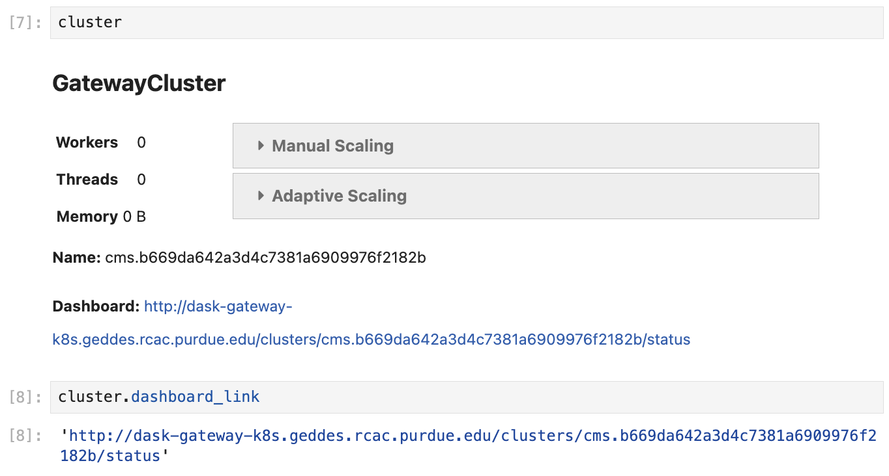

Dask Gateway at Purdue AF¶
Dask Gateway is a service that allows to manage Dask clusters in a milti-tenant environment such as the Purdue Analysis Facility.
There are two types of Dask Gateway clusters that can be created:
-
Dask Gateway cluster with SLURM backend: workers are submitted to Purdue Hammer cluster. This is available to Purdue users only due to Purdue data access policies.
With this method, users can create hundreds of workers, although requesting more than 200-300 workers is usually associated with some wait time due to competition with CMS production jobs and other users.
-
Dask Gateway cluster with Kubernetes backend: workers are submitted to Purdue Geddes cluster. This is available to all users.
With this method, the workers are scheduled almost instantly, but for now we restrict the total per-user resource usage to 400 cores, 800 GB RAM due to limited resources in the Analysis Facility.
The pros and cons of the Dask Gateway backends are summarized in the following table:
| Dask Gateway + SLURM | Dask Gateway + Kubernetes | |
|---|---|---|
| Pros | • SLURM is familiar to current users • Easy to access logs and worker info via squeue |
• Fast scheduling of resources • Detailed monitoring • Available to CERN/FNAL users |
| Cons | • Unavailable to CERN/FNAL users • Scheduling workers can be slow due to competition with CMS production jobs |
• Limited total amount of resources • Retreiving detailed worker info can be non-trivial for users (but easy for admins) |
1. Creating Dask Gateway clusters¶
To create a Dask Gateway cluster, you need to first connect to the Gateway server
via a Gateway object, and then use Gateway.new_cluster() method.
Calling Gateway() without arguments will connect you to the server with Kubernetes backend.
In order to use the SLURM backend, you need to specify the server URL explicitly
(see code below).
While it is possible to create a cluster in a Python script, we recommend that you instead do it from a separate Jupyter Notebook - that way the same cluster can be reused multiple times without restarting.
import os
import dask_gateway
from dask_gateway import Gateway
# To submit jobs via Kubernetes (all users)
gateway = Gateway()
# To submit jobs via SLURM (Purdue users only!)
# gateway = Gateway(
# "http://dask-gateway-k8s-slurm.geddes.rcac.purdue.edu/",
# proxy_address="api-dask-gateway-k8s-slurm.cms.geddes.rcac.purdue.edu:8000",
# )
# You may need to update some environment variables before creating a cluster.
# For example:
os.environ["X509_USER_PROXY"] = "/path-to-voms-proxy/"
# Create the cluster
cluster = gateway.new_cluster(
pixi_project = "/path/to/pixi/project", # path to pixi project (directory containing pixi.toml file)
# conda_env = "/path/to/conda/environment", # path to conda environment - can be used instead of pixi_project
worker_cores = 1, # cores per worker
worker_memory = 4, # memory per worker in GB
env = dict(os.environ), # pass environment as a dictionary
)
# If working in Jupyter Notebook, the following will create a widget
# which can be used to scale the cluster interactively:
cluster
2. Shared environments and storage volumes¶
There are multiple ways to ensure that the workers have access to specific storage volumes, Pixi or Conda environments, Python packages, C++ libraries, etc.
-
Shared storage
Dask workers have the same permissions as the user that creates them. You can use this to your advantage if your workers read/write data to/from storage locations.
Refer to the following table to decide which Dask Gateway setup works best in your case:
SLURM workers (Purdue users) Kubernetes workers (Purdue users) Kubernetes workers (CERN/FNAL users) /home/ no access no access no access /work/ no access read / write read / write Depot read / write read / write read-only CVMFS read-only read-only read-only EOS read-only read-only read-only -
Pixi or Conda environments / Jupyter kernels
Any Pixi or Conda environment that is used in your analysis can be propagated to Dask workers. The only caveat is that the workers must have read access to the storage volume where the environment is stored (see table above). For example, SLURM workers will not be able to see Pixi or Conda environments located in
/work/storage.The path to pixi project is specified in the
pixi_projectargument ofnew_cluster():cluster = gateway.new_cluster( pixi_project = "/path/to/pixi/project", # path to pixi project (directory containing pixi.toml file) # ... )If you are using a multi-environment Pixi project, you can specify the environment name in the
pixi_envargument (defaultif not specified):cluster = gateway.new_cluster( pixi_project = "/path/to/pixi/project", # path to pixi project (directory containing pixi.toml file) pixi_env = "my-env", # pixi environment name # ... )If using Conda environment, you can specify the environment name in the
conda_envargument (mutually exclusive withpixi_projectandpixi_env- see above): -
Environment variables
Passing environment variables to workers can be beneficial in various ways, for example:
- Enable imports from local Python (sub)modules by amending the
PYTHONPATHvariable. - Enable imports from C++ libraries by amending the
LD_LIBRARY_PATHvariable. - Allow workers to read data via XRootD by specifying path to VOMS proxy via
X509_USER_PROXYvariable.
The
gateway.new_cluster()command takesenvargument which can be used to pass any set of environment variables to workers. The most straightforward way to use this is to pass the entire local environment as follows:os.environ["X509_USER_PROXY"] = "/path-to-proxy" cluster = gateway.new_cluster( #... env = dict(os.environ) )Important
For CERN and FNAL users, the dictionary passed to
envargument must contain elements"NB_UID"and"NB_GID". This is already satisfied when you passenv = dict(os.environ), so no further action is needed.However, if you want to pass a custom environment to workers, you can add the required elements as follows:
- Enable imports from local Python (sub)modules by amending the
3. Monitoring¶
Monitoring your Dask jobs is possible in two ways:
- Via Dask dashboard which is created for each cluster (see instructions below).
- Via the general Purdue AF monitoring page, in the "Slurm metrics" and "Dask metrics" sections of the monitoring dashboard.
When a cluster is created in a Jupyter Notebook, you can extract the link to the dashboard
either from a Dask Gateway widget, or from cluster.dashboard_link.
To create a widget, simply execute a cell containing a reference to the cluster object, as shown in the screenshot.

4. Cluster discovery and connecting a client¶
In general, connecting a client to a Gateway cluster is done as follows:
However, this implies that cluster refers to an already existing object.
This is true if the cluster was created in the same notebook,
but in most cases we recommend that the cluster is kept separate from the clients.
Below are the different ways to connect a client to a cluster created elsewhere:
This snippet allows to discover the cluster and connect to it automatically, as long as the cluster exists.
from dask_gateway import Gateway
# If submitting workers as Kubernetes pods (all users):
gateway = Gateway()
# If submitting workers as SLURM jobs (Purdue users only):
# gateway = Gateway(
# "http://dask-gateway-k8s-slurm.geddes.rcac.purdue.edu/",
# proxy_address="api-dask-gateway-k8s-slurm.cms.geddes.rcac.purdue.edu:8000",
# )
clusters = gateway.list_clusters()
# for example, select the first of existing clusters
cluster_name = clusters[0].name
cluster = gateway.connect(cluster_name).get_client()
Caution
If you have more than one Dask Gateway cluster running, automatic detection may be ambiguous.
This is the most straightforward method of connecting to a specific cluster, it may be benefitial if you have more than one cluster running and need to ensure that you are connecting to a correct one.
from dask_gateway import Gateway
# If submitting workers as Kubernetes pods (all users):
gateway = Gateway()
# If submitting workers as SLURM jobs (Purdue users only):
# gateway = Gateway(
# "http://dask-gateway-k8s-slurm.geddes.rcac.purdue.edu/",
# proxy_address="api-dask-gateway-k8s-slurm.cms.geddes.rcac.purdue.edu:8000",
# )
# To find the cluster name:
print(gateway.list_clusters())
# replace with actual cluster name:
cluster_name = "17dfaa3c10dc48719f5dd8371893f3e5"
client = gateway.connect(cluster_name).get_client()
5. Cluster lifetime and timeouts¶
- Cluster creation will fail if the scheduler doesn't start in 2 minutes. If this happens, try to resubmit the cluster.
- Once created, Dask scheduler and workers will persist for 1 day.
- If the notebook from which the Dask Gateway cluster was created is terminated, the cluster and all its workers will be killed after 1 hour.